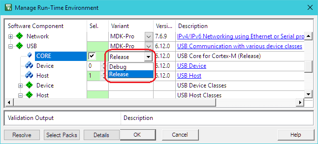

本章介绍 USB 主机组件的软件结构，并说明它用于创建 USB 主机应用程序。该软件组件仅供 MDK 专业版的用户使用。
USB 主机组件简化了允许连接 USB 设备的微控制器系统的软件开发。USB 主机组件的属性是：
RTE 组件
下图显示了 RTE 组件与单片机的 USB 主机外设（USB 控制器）的关系。RTE 组件提供配置文件和用户代码模板。配置文件 配置 RTE 组件，硬件接口，内存资源和 USB 主机参数。用户代码模板 为实现对不同 USB 设备类的支持提供了框架。
创建一个 USB 主机应用程序
创建用作 USB 主机的微控制器应用程序的步骤如下：
- 选择您的应用程序所需的 RTE 组件。
- 启用并配置 USB 主机驱动程序。
- 配置将 USB 中间件连接到单片机 USB 外设的 USB 主机。
- 根据 USB 主机组件的 资源需求 配置 系统资源。
- 配置连接的 USB 设备 的参数。
- 使用提供的代码模板来实现 应用程序代码，以支持各种 USB 设备类。
- 使用 USB 组件的内置机制 调试 您的应用程序。
RTE 组件选择
RTE 组件选择通过几个步骤完成：
- 来自 USB 组件：
- 选择提供 USB 通信所需基本功能的 USB:CORE。
- 将 USB:Host 设置为'1'。这将创建一个 USB 主机与连接的 USB 设备进行通信。
- 选择 USB 类（HID / MSC / CDC / 自定义 类）所需的支持。例如，选择 USB:Host:HID 仅支持 HID 类设备。
- 从驱动程序组件：
- 从设备组件：
- 来自 CMSIS 组件：
- 选择 CMSIS:CORE 为处理器提供核心接口。
- 选择适合 USB 组件所需的 CMSIS:RTOS。
USB 驱动程序和控制器
微控制器的 USB 主机驱动程序和 USB 控制器需要正确配置。特别是这意味着：
- 在驱动程序组件下选择的 USB 主机驱动程序通常使用 RTE_Device.h 配置文件进行配置。虽然此文件提供了多个选项，但启用与此驱动程序相关的 USB 主机外设通常就足够了。某些微控制器可能需要与物理层接口（PHY），USB VBUS 电源和 过流 保护相关的设置。
- 微控制器的 USB 控制器通常需要特定的时钟设置。请参阅微控制器的用户指南以了解要求。或者，您可以复制为各种评估板提供的 USB 主机示例的设置。
USB 主机配置
USBH_Config_n.c 文件包含特定 USB 主机的其他设置：
- 根据所选择的 USB 控制器设置 驱动器号。对于单个 USB 设备控制器，它将是 “0”。
- 一些微控制器可以使用不同的硬件 控制器接口。请查阅所选微控制器的用户指南以选择正确的设置。
有关所有可用设置的详细列表，请参阅 配置。
系统资源配置
为了正确操作，USB 主机组件需要一些系统配置设置。要求是：
- 额外的 512 字节 的 堆栈 大小。这可以在设备的 文件（
Stack_Size）中进行配置。
- USB 主机组件使用 CMSIS-RTOS 线程。根据实例的数量，您需要在 文件中配置其他设置。
有关更多信息，请查看 USB 主机组件的 资源需求 部分。
可连接的 USB 设备的配置
在 USBH_Config_HID.h，USBH_Config_MSC.h，USBH_Config_CDC.h 或 USBH_Config_CustomClass.h 中，您可以指定 USB 主机将支持的并行 USB 设备的数量。这会影响应用程序中用于附加 USB 设备的内存量。USB 主机 示例 显示如何配置 USB 主机以与不同的 HID，MSC 或 CDC 外围设备进行交互。
用户代码实现
文件提供功能模板以支持 USB 主机上的各种 USB 设备类。USB 主机组件的
参考 部分对可用功能进行了说明。这些例程可以适应微控制器应用的需求，以防需要不同的默认功能。
以下模板可用于 USB 主机组件：
| 模板名称 | 用意 |
| USBH_MSC.c | 支持 MSC 设备的必需功能。该模板可以在 这里 找到。 |
| USBH_PL2303.c | 所需功能支持 Prolific PL2303 USB 至串行 RS232 适配器。该模板可以在 这里 找到。 |
| USBH_User_CustomClass.c | 所需的功能，以支持任何 USB 设备类。该模板可以在 这里 找到。 |
调试
USB 主机组件以库的形式分发，不允许其直接代码调试。然而，它可以很容易地配置为生成调试事件并为组件操作提供动态可见性。
可以在 Manage Run-Time Environment 窗口中为 USB:CORE 软件组件选择以下变体：
- Debug: 该变体支持 的事件注释，并且使得在应用程序调试过程中分析 USB 主机组件的内部操作变得非常简单。下面的 事件记录器支持 介绍了如何配置和使用这个变体。
- Release: 这个变体不包含额外的调试代码。部署应用程序时使用此变体。
下图显示了 Debug 版本的选择。

USB Host:Debug Events 描述 USB 设备组件中实现的事件。
事件记录器支持
是一个强大的工具，可以提供程序动态执行的可视性。
USB 主机组件为事件记录器生成 一系列广泛的调试事件，并实现所需的基础设施以与其进行交互。
要使用事件记录器，需要创建具有事件生成支持的图像。必要的步骤是：
- : 在 RTE 管理对话框中选择 USB:CORE 软件组件的 Debug 版本。
- : 在 RTE 管理对话框中启用软件组件 Compiler:Event Recorder。
- : 在应用程序代码中，调用函数 EventRecorderInitialize。
- : 如有必要，调整默认的事件记录器配置。
- 构建应用程序代码，将其下载到目标硬件并启动调试会话。
现在，当 USB 主机生成事件信息时，可以在 中查看它。